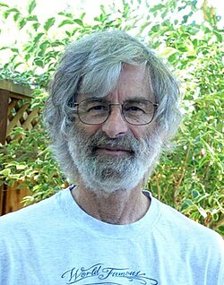

Leslie Lamport | |
|---|---|
 Lamport in 2008 | |
| Born | February 7, 1941 New York City, U.S. |
| Education | |
| Known for | |
| Awards |
|
| Scientific career | |
| Fields | Computer science |
| Institutions | |
| Thesis | The analytic Cauchy problem with singular data (1972) |
| Richard Palais[1] | |
| Website | lamport |
{kind=link}
Leslie Barry Lamport[2] (born February 7, 1941) is an American computer scientist and mathematician. Lamport is best known for his seminal work in distributed systems, and as the initial developer of the document preparation system LaTeX and the author of its first manual.[3]
Lamport was the winner of the 2013 Turing Award[2] for imposing clear, well-defined coherence on the seemingly chaotic behavior of distributed computing systems, in which several autonomous computers communicate with each other by passing messages. He devised important algorithms and developed formal modeling and verification protocols that improve the quality of real distributed systems. These contributions have resulted in improved correctness, performance, and reliability of computer systems.[4][5][6][7]
Early life and education
Lamport was born into a Jewish family in Brooklyn, New York, the son of Benjamin and Hannah Lamport (née Lasser). His father was an immigrant from Volkovisk in the Russian Empire (now Vawkavysk, Belarus)[8] and his mother was an immigrant from the Austro-Hungarian Empire, now southeastern Poland.
A graduate of Bronx High School of Science, Lamport received a B.S. in mathematics from the Massachusetts Institute of Technology in 1960, followed by M.A. (1963) and Ph.D. (1972) degrees in mathematics from Brandeis University.[9] His dissertation, The analytic Cauchy problem with singular data, is about singularities in analytic partial differential equations.[10]
Career and research
Lamport worked as a computer scientist at Massachusetts Computer Associates from 1970 to 1977, Stanford Research Institute (SRI International) from 1977 to 1985, and Digital Equipment Corporation and Compaq from 1985 to 2001. In 2001 he joined Microsoft Research in California,[9] and he retired in January 2025.[11]
Distributed systems
Lamport's research contributions have laid the foundations of the theory of distributed systems. Among his most notable papers are
- "Time, Clocks, and the Ordering of Events in a Distributed System",[5] which received the Principles of Distributed Computing (PODC) Influential Paper Award in 2000,[12]
- "How to Make a Multiprocessor Computer That Correctly Executes Multiprocess Programs",[13] which defined the notion of sequential consistency,
- "The Byzantine Generals' Problem",[14]
- "Distributed Snapshots: Determining Global States of a Distributed System"[15] and
- "The Part-Time Parliament".[16]
These papers relate to such concepts as logical clocks (and the happened-before relationship) and Byzantine failures. They are among the most cited papers in the field of computer science,[17] and describe algorithms to solve many fundamental problems in distributed systems, including:
- the Paxos algorithm for consensus,
- the bakery algorithm for mutual exclusion of multiple threads in a computer system that require the same resources at the same time,
- the Chandy–Lamport algorithm for the determination of consistent global states (snapshot), and
- the Lamport signature, one of the prototypes of the digital signature.
LaTeX
When Donald Knuth began issuing the early releases of TeX in the early 1980s, Lamport — due to his personal need of writing a book — also began working on a set of macros based on it, hoping that it would later become its standard macro package. This set of macros would later become known as LaTeX, for which Lamport would subsequently be approached in 1983 by Peter Gordon, an Addison-Wesley editor, who proposed that Lamport turn its user manual into a book.[18][19]
In September 1984, Lamport released version 2.06a of the LaTeX macros, and in August 1985, LaTeX 2.09 — the last version of Lamport's LaTeX — would be released as well. Meanwhile, Addison-Wesley released Lamport's first LaTeX user manual, LaTeX: A Document Preparation System, in 1986, which purportedly sold "more than a few hundred thousands" copies, and on August 21, 1989, at a TeX User Group meeting at Stanford, Lamport would agree to turn over the maintenance and development of LaTeX to Frank Mittelbach, who, along with Chris Rowley and Rainer Schöpf, would form the LaTeX3 team, subsequently releasing LaTeX 2e, the current version of LaTeX, in 1994.[19][20]
Temporal logic
Lamport is also known for his work on temporal logic, where he introduced the temporal logic of actions (TLA).[21][22] Among his more recent contributions is TLA+, a language for specifying and reasoning about concurrent and reactive systems, which he describes in the book Specifying Systems: The TLA+ Language and Tools for Hardware and Software Engineers.[23] He defines TLA+ as a "quixotic attempt to overcome engineers' antipathy towards mathematics".[24]
Awards and honors
Lamport received the 2013 Turing Award for "fundamental contributions to the theory and practice of distributed and concurrent systems, notably the invention of concepts such as causality and logical clocks, safety and liveness, replicated state machines, and sequential consistency", which can be used in synchronizing the systems.[25][26] He was elected a member of the National Academy of Engineering in 1991 for contributions to the theoretical foundations of concurrent and fault-tolerant computing. He was elected to Fellow of Association for Computing Machinery for fundamental contributions to the theory and practice of distributed and concurrent systems in 2014.[27] He also received five honorary doctorates from European universities: University of Rennes and Christian Albrechts University of Kiel in 2003, École Polytechnique Fédérale de Lausanne (EPFL) in 2004, University of Lugano in 2006, and Nancy-Université in 2007.[9] In 2004, he received the IEEE Emanuel R. Piore Award.[28] In 2005, the paper "Reaching Agreement in the Presence of Faults"[29] received the Dijkstra Prize.[30] In honor of Lamport's sixtieth birthday, a lecture series was organized at the 20th Symposium on Principles of Distributed Computing (PODC 2001).[31] In 2008, he received the IEEE John von Neumann Medal.[32] In 2011, he was elected to the National Academy of Sciences.[33]
In 2020, the Solana blockchain platform named its smallest unit of currency the lamport in honor of Lamport. The lamport is a fractional native token with the value of 0.000000001 sol (one billionth of a sol). [1]
See also
References
- ^ Leslie Lamport at the Mathematics Genealogy Project
- ^ a b "Leslie Barry Lamport - A.M. Turing Award Winner". amturing.acm.org. 2013. Retrieved 2025-12-06.
- ^ Lamport, Leslie (1986). LaTeX: A Document Preparation System. Addison-Wesley. ISBN 978-0-201-15790-1. Retrieved 2019-06-20.
- ^ Leslie Lamport author profile page at the ACM Digital Library
- ^ a b Lamport, L. (1978). "Time, clocks, and the ordering of events in a distributed system" (PDF). Communications of the ACM. 21 (7): 558–565. CiteSeerX 10.1.1.142.3682. doi:10.1145/359545.359563. S2CID 215822405.
{{cite journal}}: Cite uses deprecated parameter|citeseerx=(help) - ^ Savage, N. (2014). "General agreement: Leslie Lamport contributed to the theory and practice of building distributed computing systems that work as intended". Communications of the ACM. 57 (6): 22–23. doi:10.1145/2601076. S2CID 5936915.
- ^ Hoffmann, L. (2014). "Q&A Divide and Conquer: Leslie Lamport on Byzantine generals, clocks, and other tools for reasoning about concurrent systems". Communications of the ACM. 57 (6): 112–ff. doi:10.1145/2601077. S2CID 31514650.
- ^ "World War I draft card for Benjamin Lamport". Ancestry.com. Retrieved 12 July 2022.
- ^ a b c Lamport, Leslie (2006-12-19). "My Writings". Retrieved 2007-02-02.
- ^ Lamport, Leslie (1972). "The Analytic Cauchy Problem with Singular Data". Retrieved 2007-02-02.
- ^ "Leslie Lamport's Home Page". www.lamport.org. Archived from the original on 2024-12-28. Retrieved 2025-01-03.
- ^ Neiger, Gil (2003-01-23). "PODC Influential Paper Award: 2000". Archived from the original on 2013-09-12. Retrieved 2007-02-02.
- ^ Lamport, Leslie (1979). "How to Make a Multiprocessor Computer That Correctly Executes Multiprocess Program". IEEE Trans. Comput. 28 (9): 690–691. doi:10.1109/TC.1979.1675439. ISSN 0018-9340. S2CID 5679366.
- ^ Lamport, Leslie; Robert Shostak; Marshall Pease (July 1982). "The Byzantine Generals Problem". ACM Transactions on Programming Languages and Systems. 4 (3): 382–401. CiteSeerX 10.1.1.64.2312. doi:10.1145/357172.357176. S2CID 55899582. Retrieved 2007-02-02.
{{cite journal}}: Cite uses deprecated parameter|citeseerx=(help) - ^ Chandy, K. Mani; Leslie Lamport (February 1985). "Distributed Snapshots: Determining Global States of a Distributed System". ACM Transactions on Computer Systems. 3 (1): 63–75. CiteSeerX 10.1.1.69.2561. doi:10.1145/214451.214456. S2CID 207193167. Retrieved 2007-02-02.
{{cite journal}}: Cite uses deprecated parameter|citeseerx=(help) - ^ Lamport, Leslie (May 1998). "The Part-Time Parliament". ACM Transactions on Computer Systems. 16 (2): 133–169. doi:10.1145/279227.279229. S2CID 421028. Retrieved 2007-02-02.
- ^ "Most cited articles in Computer Science". September 2006. Retrieved 2007-10-08.
{{cite web}}: CS1 maint: miscellaneous url (link) - ^ Lamport, Leslie. "How (LA)TEX changed the face of Mathematics" (PDF).
- ^ a b "The Writings of Leslie Lamport". lamport.azurewebsites.net. Retrieved 2019-07-19.
- ^ "TeX, LaTeX, and AMS-LaTeX". 1998-12-03. Archived from the original on 1998-12-03. Retrieved 2019-07-19.
- ^ Lamport, Leslie (1990-04-01). "A Temporal Logic of Actions". Retrieved 2007-02-02.
- ^ Lamport, Leslie (May 1994). "The Temporal Logic of Actions". ACM Transactions on Programming Languages and Systems. 16 (3): 872–923. doi:10.1145/177492.177726. S2CID 5498471. Retrieved 2007-02-02.
- ^ Lamport, Leslie (2002). Specifying Systems: The TLA+ Language and Tools for Hardware and Software Engineers. Addison-Wesley. ISBN 978-0-321-14306-8. Retrieved 2007-02-02.
- ^ "The International Conference on Dependable Systems and Networks keynote speaker biography". Archived from the original on 2019-02-12. Retrieved 2021-07-05.
- ^ "Turing award 2013". ACM.
- ^ Newport, Cal (2021). "Part 1: The Case Against Email : Chapter 3: Email Has a Mind of Its Own; Notes". A World Without Email: Reimagining Work in an Age of Communication Overload. Portfolio / Penguin. pp. 81, 273. ISBN 978-0-525-53655-0.
- ^ Leslie Lamport ACM Fellows 2014
- ^ "IEEE Emanuel R. Piore Award Recipients es" (PDF). IEEE. Archived from the original (PDF) on 2010-11-24. Retrieved 2010-12-31.
- ^ Pease, Marshall; Robert Shostak; Leslie Lamport (April 1980). "Reaching Agreement in the Presence of Faults". Journal of the Association for Computing Machinery. 27 (2): 228–234. CiteSeerX 10.1.1.68.4044. doi:10.1145/322186.322188. S2CID 6429068. Retrieved 2007-02-02.
{{cite journal}}: Cite uses deprecated parameter|citeseerx=(help) - ^ "Edsger W. Dijkstra Prize in Distributed Computing: 2005". Retrieved 2007-02-02.
- ^ "PODC 2001: Lamport Lecture Series". Retrieved 2009-07-02.
- ^ "IEEE John von Neumann Medal Recipients" (PDF). IEEE. Archived from the original (PDF) on June 19, 2010. Retrieved December 31, 2010.
- ^ Members and Foreign Associates Elected Archived May 7, 2011, at the Wayback Machine, National Academy of Sciences, May 3, 2011.
External links
 Quotations related to Leslie Lamport at Wikiquote
Quotations related to Leslie Lamport at Wikiquote